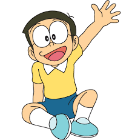
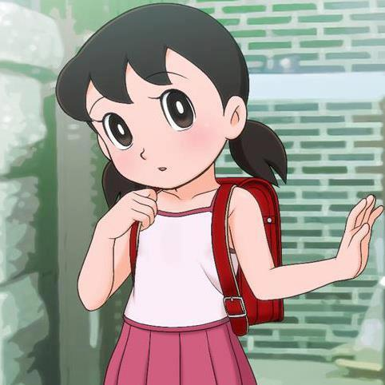
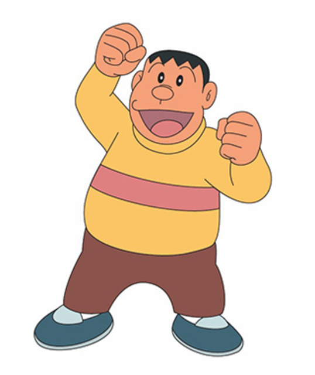
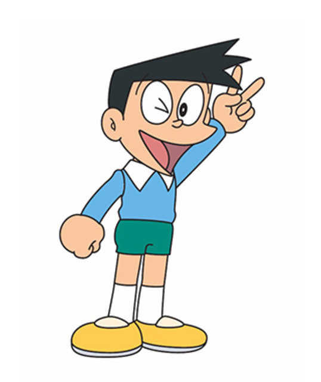

• Doraemon ( ドラえもん )

Doraemon is a robotics cat made from the year 2116, in a factory named Matsushiba Robots. He comes to Nobita to help him get through hardships, by taking out gadgets from future from his 4d pocket, to help Nobita.
• Nobita Nobi ( 野比 のび太 )
Nobita Nobi, commonly known as Nobi, is a sore loser who likes comics and always gets very low marks in schools resulting to get hit my his mother every time.
• Shizuka Minamoto ( 源 静香 )
Shizuka Minamoto, commonly known as Sue, is a girl who is very smart, athletic, kind, sweet, friendly, gentle and basically a perfect girl in your dreams.
• Takeshi Gouda ( ジャイアン )
Takeshi Gouda, commonly known as Gian, is a fat, inflated charcter who bullies Noby all the time. One of his talents is singing horrendously.
• Suneo Honekawa ( 骨川スネ夫 )
Suneo Honewaka, commmonly known as Sneech, is a spoiled rich kid who likes to show off his new cool stuff to his friends. He is scrawny, and is recognized as sidekick of Gian.